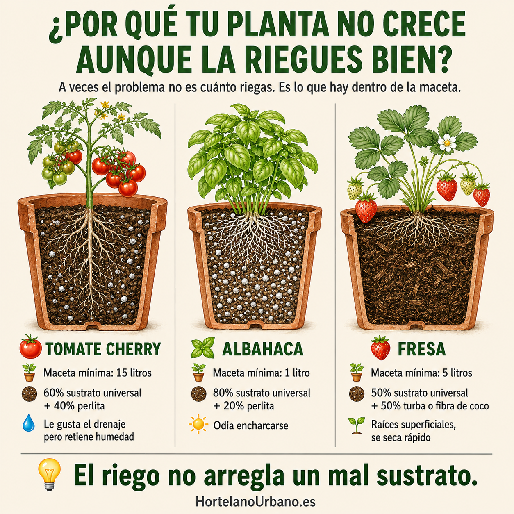

Riego
Cómo regar las plantas cuando te vas de vacaciones (sin que se mueran)
Trucos gratis para escapadas cortas y los mejores sistemas automáticos para una semana o más. Sin depender del vecino.
Leer artículo →Guías prácticas, sin rodeos, para cultivar en balcón, terraza o huerto en España.
Trucos gratis para escapadas cortas y los mejores sistemas automáticos para una semana o más. Sin depender del vecino.
Leer artículo →
Muchas plantas no crecen por el sustrato equivocado, no por falta de agua. La mezcla correcta para cada caso.
Leer artículo →
Lo que siembres ahora es lo que cosecharás en otoño. Qué plantar y cómo hacerlo sin que el calor te lo estropee.
Leer artículo →
Tamaño mínimo, material y las mejores opciones: textil, autorriego y barandilla. Guía práctica para no equivocarte.
Leer artículo →
Variedad, maceta, sustrato, riego y tutores. Todo lo que necesitas para cosechar tomates en casa este verano.
Leer artículo →
Guía mes a mes con las plantas que toca sembrar, trasplantar y cosechar según tu zona climática.
Leer artículo →
Qué diferencia al sustrato de la tierra del jardín, cómo elegirlo y cuándo renovarlo para que tus plantas crezcan bien.
Leer artículo →
Cómo instalar un sistema de riego automático por goteo en tu balcón o terraza sin obras y sin gastar mucho.
Leer artículo →
Las 10 plantas con mayor tasa de éxito para principiantes: se adaptan a maceta, necesitan poco espacio y producen rápido.
Leer artículo →
Trucos de verticalidad, macetas apilables y selección inteligente de plantas para sacar el máximo partido a 2-4 m².
Leer artículo →
Qué necesitas, cómo elegir semillas, preparar el sustrato y sembrar con éxito desde el primer día. Sin tecnicismos.
Leer artículo →
Opciones para quien vive sin balcón: alféizares, luces LED, plantas de interior y los mejores kits para empezar.
Leer artículo →
Qué sembrar y trasplantar en junio según tu zona climática, qué evitar con el calor y cómo regar en verano.
Leer artículo →
Qué sembrar, trasplantar y cosechar en julio según tu zona climática. Con consejos de riego, sombra y acolchado para el calor.
Leer artículo →
Qué maceta, sustrato y riego necesitan las fresas para producir bien en balcón o terraza. Con el truco de la corona y las mejores variedades.
Leer artículo →
El error que mata la albahaca del súper y cómo evitarlo. Riego, luz, poda y el secreto de las flores para tener albahaca fresca todo el verano.
Leer artículo →